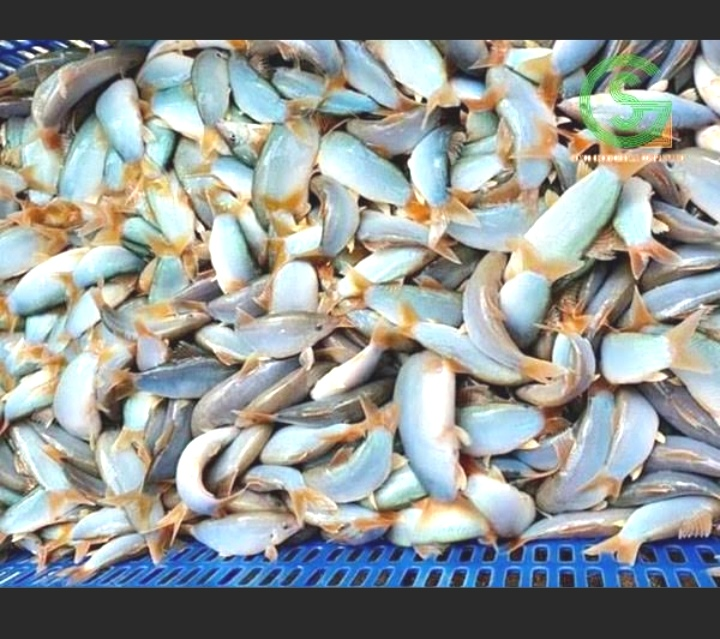
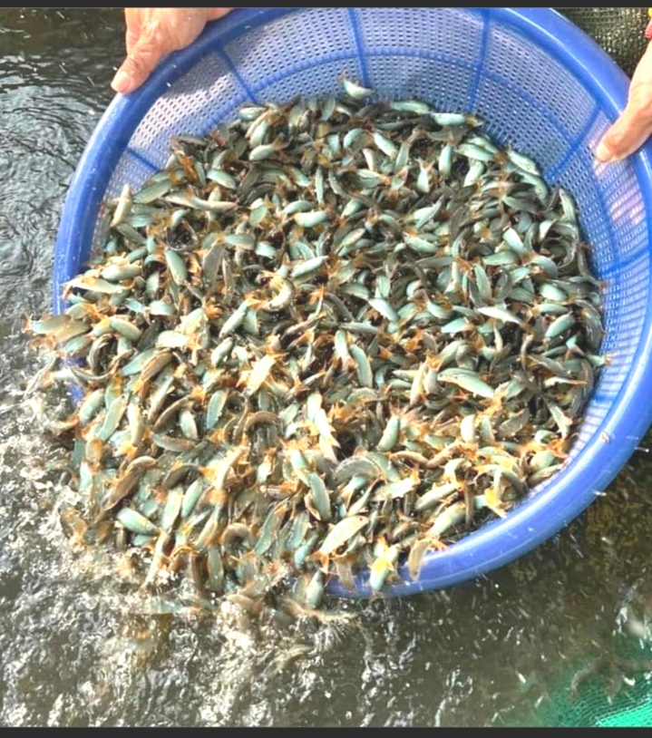
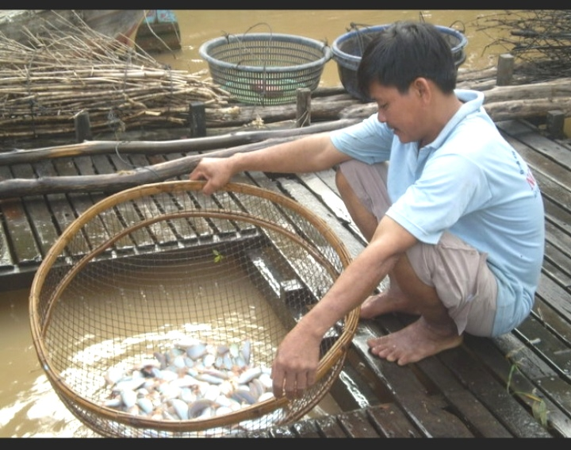

Kỹ Thuật Nuôi Cá Heo Nước Ngọt Thương Phẩm Đạt Năng Suất Cao: Cẩm Nang Toàn Tập Từ Chuyên Gia
Cá heo nước ngọt (tên khoa học: Yasuhikotakia modesta) là loài cá đặc sản có giá trị kinh tế bậc nhất tại lưu vực sông Mê Kông. Với chất lượng thịt thơm ngon, béo ngậy đặc trưng, cá heo luôn thuộc nhóm thủy sản đắt hàng tại các nhà hàng, đại lý hải sản lớn với mức giá dao động từ 350.000 đến 500.000 VNĐ/kg. Bối cảnh nguồn giống tự nhiên ngày càng suy giảm đã mở ra cơ hội vàng cho bà con nông dân chuyển đổi sang mô hình nuôi thương phẩm thâm canh.
Tuy nhiên, cá heo nước ngọt là loài cá da trơn tương đối nhạy cảm, có tập tính sống đáy, thích dòng chảy và rất dễ gặp rủi ro nếu người nuôi không nắm vững các chỉ số hóa sinh nguồn nước, kỹ thuật làm giá thể trú ẩn cũng như chế độ dinh dưỡng chuyên biệt. Bài viết này là toàn bộ quy trình kỹ thuật nuôi cá heo nước ngọt thương phẩm được tổng hợp từ hơn 30 năm kinh nghiệm thực chiến, giải quyết triệt để mọi khó khăn mà bà con thường gặp phải.
BẢNG TỔNG HỢP THÔNG SỐ VÀNG TRONG KỸ THUẬT NUÔI CÁ HEO NƯỚC NGỌT
| Hạng Mục Kỹ Thuật | Thống Số Chuẩn Tối Ưu | Ngưỡng An Toàn Chấp Nhận |
|---|---|---|
| Nhiệt độ nước ($T$) | 27°C - 29°C | 25°C - 32°C (Dưới 22°C cá bỏ ăn) |
| Độ pH môi trường | 6.8 - 7.5 | 6.5 - 8.0 (Biến động ngày đêm < 0.5) |
| Oxy hòa tan ($DO$) | ≥ 4.5 mg/L | ≥ 3.0 mg/L (Dưới 2.5 mg/L cá nổi đầu) |
| Độ kiềm ($HCO_3^-$) | 90 - 120 mg/L | 70 - 150 mg/L |
| Khí độc $NH_3$ / $NO_2$ | $NH_3$ < 0.01 mg/L | $NO_2$ < 0.1 mg/L | Tuyệt đối không có tích tụ $NO_2$ |
| Mật độ thả (Bể bạt/Xi măng) | 100 - 120 con/m² | 80 - 150 con/m² (Có sục khí mạnh) |
| Mật độ thả (Lồng bè sông) | 150 - 200 con/m³ | 100 - 250 con/m³ |
1. Đặc Tính Sinh Học Chi Tiết & Tự Nhiên Của Cá Heo Nước Ngọt
Để nuôi thành công bất kỳ đối tượng thủy sản nào, việc hiểu rõ bản năng sinh học là điều kiện tiên quyết. Cá heo nước ngọt có những đặc điểm giải phẫu và tập tính rất riêng biệt:
- Cơ quan tự vệ đặc biệt: Dưới hai hốc mắt của cá heo có hai gai nhọn cong cứng. Khi cá bị hoảng sợ, giật mình hoặc môi trường thay đổi đột ngột, chúng sẽ giương cặp gai này ra để tự vệ. Trong quá trình đánh bắt, vận chuyển mật độ dày, cặp gai này rất dễ đâm lẫn nhau gây trầy xước, nhiễm trùng da hàng loạt.
- Tập tính trú ẩn và hoạt động: Cá heo là loài cá nhút nhát, thích sống trong tối, nhạy cảm với ánh sáng mạnh. Ban ngày chúng thường chui rúc vào các khe đá, gốc cây, chà gai; ban đêm mới ra ngoài săn mồi. Do đó, hệ thống nuôi bắt buộc phải trang bị hệ thống giá thể nhân tạo dày đặc.
- Phát ra âm thanh: Khi bắt cá ra khỏi nước hoặc khi cá tranh giành thức ăn, chúng phát ra tiếng kêu "óc óc" nhỏ tương tự tiếng heo kêu. Đây cũng là nguồn gốc tên gọi cá heo nước ngọt của bà con miền Tây.

2. So Sánh Đánh Giá Các Mô Hình Nuôi Cá Heo Thực Chiến
Hiện nay có 3 mô hình nuôi cá heo nước ngọt thương phẩm chính đang được áp dụng rộng rãi. Mỗi mô hình có ưu và nhược điểm riêng phù hợp với từng điều kiện địa lý:
2.1. Mô hình nuôi cá heo trong lồng bè trên sông (Tối ưu nhất cho vùng nước chảy)
Được áp dụng phổ biến ở các tỉnh An Giang, Đồng Tháp, Cần Thơ dọc sông Tiền và sông Hậu. Nước sông lưu thông liên tục cung cấp lượng oxy dồi dào và cuốn trôi toàn bộ chất thải, giúp cá lớn nhanh, ít bệnh tật và thịt rất chắc.
- Thiết kế bè: Kích thước bè phổ biến từ $3m \times 4m \times 2m$ hoặc $4m \times 6m \times 2.5m$. Khung bè làm bằng gỗ cứng hoặc thép kẽm chống gỉ.
- Lưới bao quanh: Dùng lưới dệt không gút mắt nhỏ ($0.5 - 1.0$ cm giai đoạn cá nhỏ) để tránh cá bị mắc gai dưới mắt vào lưới gây chết.
2.2. Mô hình nuôi cá heo trong bể bạt lót / Bể bê tông (Tối ưu kiểm soát)
Đây là mô hình bứt phá giúp nông dân ở vùng không có sông lớn hoặc vùng nội đồng vẫn có thể làm giàu. Bể bạt giúp kiểm soát tuyệt đối 100% chất lượng nước, mầm bệnh từ bên ngoài và dễ dàng quản lý lượng thức ăn.
- Diện tích bể chuẩn: $20m² - 50m²$, chiều cao thành bể $1.2m - 1.5m$, mức nước duy trì $0.8m - 1.2m$.
- Thiết kế đáy: Đáy bể phải làm độ dốc $3 - 5\%$ về phía rốn xả van phi 60mm hoặc phi 90mm để xả chất thải hàng ngày (Xi-phông).

2.3. Mô hình nuôi kết hợp trong ao đất
Thích hợp nuôi diện tích lớn ($500m² - 2.000m²$). Tuy nhiên, tỷ lệ sống của cá heo nuôi trong ao đất thường thấp hơn ($50 - 65\%$) do khó thu hồi hoàn toàn cá ẩn nấp dưới bùn và khó kiểm soát lượng thức ăn dư thừa gây ô nhiễm đáy ao.
3. Thiết Kế Hạ Tầng & Kỹ Thuật Làm Giá Thể Trú Ẩn Bắt Buộc
Nhiều hộ nuôi thất bại nặng nề vì thả cá vào bể trống không có giá thể. Cá không có chỗ trốn sẽ bị căng thẳng (stress) kéo dài, bỏ ăn, bơi hoảng loạn đâm vào nhau làm rách da và chết rải rác.
Tác dụng: Cá heo rất thích chui vào trong ống nhựa. Mỗi bó ống có thể làm nơi trú ẩn cho $300 - 500$ con cá heo, giúp tăng diện tích phân bố trong bể lên gấp 3 lần!
4. Chuẩn Bị Nguồn Nước & Quy Trình Thả Giống Tỷ Lệ Sống > 95%
4.1. Quy trình xử lý nước cấp trước khi nuôi
- Nước sông/kênh rạch: Bơm qua ao lắng, chạy quạt nước 2 ngày. Tạt Chlorine liều $20 - 30$ g/m³ ($20 - 30$ ppm) để diệt khuẩn và ký sinh trùng. Sau 3 ngày, tạt Thiosulfate sodium liều $5 - 10$ g/m³ để khử sạch Chlorine dư.
- Nước giếng khoan: Phải qua hệ thống giàn mưa khử phèn sắt ($Fe^{2+}$), nâng pH đạt trên 6.8 và sục khí liên tục 24 - 48 giờ để thoát hết khí độc $H_2S$, $CO_2$ trước khi cấp vào bể nuôi.
4.2. Chọn và thuần dưỡng cá giống
- Kích cỡ giống chuẩn: Chọn cá giống kích cỡ $300 - 500$ con/kg (hoặc $150 - 200$ con/kg nếu nuôi rút ngắn thời gian). Không chọn cá quá nhỏ (< 800 con/kg) vì sức đề kháng kém.
- Nguồn gốc: Ưu tiên cá giống dưỡng nhân tạo, màu sắc đồng đều, không bị lở loét, vây đuôi nguyên vẹn, không bị nhiễm nấm.
Quy trình thuần hóa đúng: Ngâm nguyên bao cá giống xuống bể nuôi từ $20 - 30$ phút cho cân bằng nhiệt độ. Sau đó mở miệng bao, múc từng gáo nước trong bể đổ từ từ vào bao, chờ 5 phút rồi mới nghiêng miệng bao cho cá tự bơi ra ngoài. Tuyệt đối không đổ ụp bao cá vào bể!
5. Chế Độ Dinh Dưỡng, Công Thức Phối Trộn & Lịch Cho Ăn Thực Chiến
Cá heo nước ngọt thuộc nhóm động vật ăn tạp thiên về mùn bã hữu cơ và động vật nhỏ. Để cá lớn nhanh, ít bệnh và tối ưu chi phí, bà con cần áp dụng công thức dinh dưỡng theo từng giai đoạn phát triển:

5.1. Khẩu phần đạm và loại thức ăn theo độ tuổi
| Giai Đoạn Nuôi | Hàm Lượng Đạm Tối Ưu | Loại Thức Ăn Chuyên Dùng | Tỷ Lệ Cho Ăn (% Trọng Lượng Cá) |
|---|---|---|---|
| Tháng 1 - Tháng 2 | 40% - 42% Đạm | Trùn quế, cá tạp xay nhuyễn, cám công nghiệp viên hạt nhỏ ($1.0 - 1.5$ mm) | 7% - 10% / ngày |
| Tháng 3 - Tháng 5 | 35% - 38% Đạm | Cám nổi công nghiệp viên $2.0$ mm phối trộn trùn quế, ốc băm nhỏ | 4% - 6% / ngày |
| Tháng 6 - Thu hoạch | 30% - 32% Đạm | Cám viên nổi $3.0 - 4.0$ mm kết hợp thức ăn tự phối trộn vỗ béo | 2% - 3.5% / ngày |
5.2. Lịch cho ăn chuẩn theo khung giờ sinh học
Do cá heo nhạy cảm với ánh sáng, bà con nên chia lượng thức ăn trong ngày làm 2 - 3 lần vào các khung giờ vàng:
- Cữ sáng ($06h00 - 07h00$): Cho ăn $30\%$ tổng lượng thức ăn trong ngày. Khi trời còn dịu mát, cá sẽ ra ăn mạnh.
- Cữ chiều mát ($17h30 - 18h30$): Cho ăn $50\%$ tổng lượng thức ăn. Đây là cữ ăn chính vì cá bắt đầu đi săn mồi tự nhiên.
- Cữ đêm ($21h00 - 22h00$ - Dành cho giai đoạn vỗ béo): Cho ăn $20\%$ còn lại bằng thức ăn tươi sống hoặc cám đạm cao.
6. Quản Lý Môi Trường Nước & Xử Lý Sự Cố Bộc Phát
6.1. Quy trình vệ sinh và thay nước định kỳ
- Đối với bể bạt/xi măng: Mỗi ngày sau cữ ăn chiều $1$ tiếng, mở van rốn xả bớt $20 - 30\%$ nước đáy để loại bỏ hoàn toàn phân cá và thức ăn dư thừa. Định kỳ 3 ngày thay $50\%$ nước.
- Đối với lồng bè: Định kỳ 7 ngày dùng bàn chải chà sạch rêu bám xung quanh mặt lưới lồng bè để đảm bảo nước sông lưu thông tốt, tránh hiện tượng nghẹt lưới gây thiếu oxy cục bộ.
6.2. Xử lý các sự cố môi trường thường gặp
- Sự cố cá nổi đầu do thiếu oxy ($DO < 2.5$ mg/L): Cá bơi lờ đờ trên mặt nước, tập trung nhiều ở ngách bể hoặc quanh vòi xả.
Xử lý khẩn cấp: Bật tối đa máy sục khí, tạt ngay Oxy viên (Sodium Percarbonate) liều $1 - 2$ kg/1.000m³ nước. Ngừng cho ăn toàn bộ cữ đó. - Sự cố pH giảm thấp bộc phát sau mưa lớn: Nước mưa chứa axit kéo pH xuống dưới 6.0 làm cá tiết nhiều nhớt, diễn ra tình trạng bỏ ăn.
Xử lý: Hòa vôi tôi $Ca(OH)_2$ hoặc vôi nông nghiệp $CaCO_3$ liều $10 - 20$ g/m³ tạt đều quanh bể/lồng nuôi để nâng pH trở lại ngưỡng 7.0.
7. Phác Đồ Điều Trị 4 Bệnh Phổ Biến Nhất Trên Cá Heo Nước Ngọt
Cá heo là loài da trơn, việc sử dụng hóa chất điều trị sai liều lượng có thể dẫn đến hiện tượng tróc nhớt và chết hàng loạt. Dưới đây là phác đồ điều trị thực chiến đã được chứng minh hiệu quả:

7.1. Bệnh 1: Bệnh Lở Loét, Xuất Huyết Da (Do vi khuẩn Aeromonas hydrophila)
- Dấu hiệu nhận biết: Thân cá xuất hiện các vết đốm đỏ, lở loét loang lổ, vây bị hoại tử xơ xước, cá bỏ ăn bơi tản mạn.
- Phác đồ điều trị 5 ngày:
- Ngày 1: Sát trùng nguồn nước bằng Iodine $90\%$ liều $1$ ml/m³ nước (hoặc BKC $80\%$ liều $0.5$ ml/m³), tạt vào lúc $09h00$ sáng. Bật sục khí liên tục.
- Ngày 2 - Ngày 5: Trộn kháng sinh Oxytetracycline liều $50$ mg/kg cá/ngày (hoặc Doxycycline liều $30$ mg/kg cá/ngày) kết hợp $5$ g Vitamin C vào thức ăn. Giảm $50\%$ lượng thức ăn hàng ngày.
7.2. Bệnh 2: Bệnh Ký Sinh Trùng (Sán lá đơn chủ, Bánh xe Trichodina)
- Dấu hiệu nhận biết: Cá bị ngứa ngáy, bơi nhào lộn, cọ xát cơ thể vào thành bể/giá thể, mang cá nhạt màu và tiết ra nhiều dịch nhớt trắng đục.
- Phác đồ điều trị:
- Sử dụng Phèn xanh (Đồng Sulfat $CuSO_4$) tạt liều $0.25 - 0.3$ g/m³ nước. Lưu ý: Chỉ dùng vào buổi sáng nắng tốt, không dùng lúc trời âm u.
- Hoặc dùng Muối hột pha ngâm tắm cá liều $2 - 3$ kg/m³ nước trong 30 phút, sau đó tiến hành thay nước mới.
7.3. Bệnh 3: Bệnh Nấm Thủy Mi / Đốm Trắng (Do nấm Saprolegnia)
- Dấu hiệu nhận biết: Xuất hiện các búi sợi tơ màu trắng như bông gòn bám trên da, vây, mang cá. Thường xảy ra vào mùa lạnh hoặc thời điểm giao mùa nhiệt độ xuống thấp (< 24°C).
- Phác đồ điều trị:
- Tạt dung dịch Bronopol (đặc trị nấm) liều $1$ ml/m³ nước liên tục 2 ngày.
- Trộn vào thức ăn men vi sinh đường ruột và Beta-Glucan liều $5$ g/kg thức ăn để nâng cao hệ miễn dịch cho cá.
7.4. Bệnh 4: Bệnh Sình Bụng, Đường Ruột (Do thức ăn ôi thiu / Dư thừa)
- Dấu hiệu nhận biết: Bụng cá trương phình to, hậu môn sưng đỏ, cá ngưng ăn, đi phân đứt đoạn có màu trắng nhầy kéo dài.
- Phác đồ điều trị:
- Bước 1: Cắt mồi hoàn toàn 1 - 2 ngày. Xả thay $50\%$ nước bể nuôi.
- Bước 2: Cho ăn lại với $20\%$ định lượng, trộn Trimethoprim + Sulfamethoxazole liều $40$ mg/kg cá/ngày, ăn liên tục 4 ngày. Sau khi khỏi bệnh, bắt buộc trộn Men tiêu hóa sống (Lactobacillus) trong 5 ngày để phục hồi hệ vi sinh đường ruột.
8. Kỹ Thuật Vỗ Béo & Thu Hoạch Cá Heo Không Bị Xây Xát
Thời gian nuôi cá heo nước ngọt từ lúc thả giống ($300 - 500$ con/kg) đến khi thu hoạch kéo dài từ $7 - 9$ tháng. Kích cỡ thương phẩm đạt chuẩn xuất bán là từ $15 - 25$ con/kg.
8.1. Quy trình vỗ béo 20 ngày trước khi thu hoạch
- Tăng hàm lượng đạm trong thức ăn lên $40\%$ bằng cách bổ sung trùn quế tươi hoặc cá thịt băm nhỏ.
- Bổ sung Dầu gan mực ($10$ ml/kg thức ăn) để tạo độ bóng da, màu sắc vàng cam tự nhiên rực rỡ, giúp thương lái thu mua với giá cao hơn từ $20.000 - 30.000$ VNĐ/kg.
8.2. Kỹ thuật thu hoạch và vận chuyển sống
- Ngưng cho ăn: Cắt thức ăn trước thời điểm thu hoạch 24 - 36 giờ để cá tiêu hóa hết thức ăn trong ruột, tránh làm bẩn nước trong quá trình vận chuyển.
- Rút giá thể nhẹ nhàng: Rút toàn bộ các ống nhựa giá thể ra ngoài trước khi kéo lưới. Thao tác nhẹ nhàng để tránh làm cá hoảng sợ, giương gai đâm nhau gây thương tổn.
- Đóng bao vận chuyển: Dùng bao nilon chuyên dụng có bơm Oxy tinh khiết. Cho nước sạch lạnh ($22°C - 24°C$) vào bao để làm giảm hoạt động sinh lý của cá, giúp cá sống khỏe trong suốt quá trình vận chuyển xa 10 - 12 tiếng.
BÀ CON CẦN TƯ VẤN KỸ THUẬT HOẶC ĐẶT MUA CÁ HEO GIỐNG CHUẨN?
Chúng tôi chuyên cung cấp cá heo nước ngọt giống chất lượng cao, đã qua thuần dưỡng, tỷ lệ sống đạt trên 95% kèm hỗ trợ tư vấn kỹ thuật làm bể, xử lý nước miễn phí suốt mùa nuôi.
💬 KẾT NỐI ZALO BẤM VÀO ĐÂY (0383.191.185)